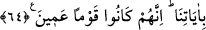

âleminden feyzi alır ve hemcinslerine onlarla hakîkat bakımından aynı cinsten olması
yönüyle ulaştırır.
Ayette “ümidiyle” buyurulması, ulaşılmak istenen gayenin değerine, sadece sakınıp
takvâ sâhibi olmanın rahmeti gerektirmediğine, aksine bunun Allah Teâlâ’nın lütfuna
bağlı olduğuna dikkat çekmek içindir. Takvâ sâhibi, takvasına güvenmemeli ve Allah
Teâlâ’nın azabından emin olmamalıdır.
64. Onu yalanladılar, biz de onu ve onunla beraber gemide bulunanları kurtardık,
ayetlerimizi yalanlayanları da suda boğduk! Çünkü onlar kör bir kavim idiler.
“O’nu yalanladılar.” Nûh (a.s.)’ın kavmi O’nu, uzun müddet yalanlamaya devam
ettiler. Boğulmalarının sebebi, sadece yalanlamaları değil, yalanlamaya devam
etmeleridir.
Rivayete göre Nûh (a.s.), kavminin helaki için Allah’a dua etti. Allah Teâlâ da ona
gemi yapmasını emretti. Gemi tamamlanınca Nûh (a.s.), mü’minlerle beraber ona bindi.
Peşinden Allah Teâlâ tûfânı gönderip kâfirleri suda boğdu. Nûh (a.s.) ile beraberindeki
mü’minleri kurtardı. Nitekim Allah Teâlâ şöyle buyurmaktadır: “Biz de onu ve onunla
beraber gemide bulunanları” kırk erkek ve kırk kadından ibâret olan mü’minleri
“kurtardık, ayetlerimizi yalanlayanları” yalanlamaya devam edenleri “da suda
boğduk” Tufanda boğulan kâfirler, sadece Nûh (a.s.)’la münakaşa eden kavminin eşrafı
değil, yalanlamada ısrar eden ve onların yolunda giden herkesti.
Ayette mü’minlerin kurtarılmasının kâfîrlerin boğulmasından önce zikredilmesi, Allah
Teâlâ’nın zatının gereği olan rahmetinin, işlenen günahlar sebebiyle eseri ortaya çıkan
gazabından önce geldiğini bildirmek içindir.
“Çünkü onlar kör bir kavim idiler.” Yani, onların kalpleri tevhid, nübüvvet ve
ahiretin hakikatini görmekten kör idi. Bunların ne olduğunu düşünüp anlayamıyorlardı.
İşte bu körlük, delilleri görmeye ve açıklamaları anlamaya manidir.
Hâfız şöyle demiştir:
Sevgilinin yüzünde ne örtü ne perde var, ancak
Görebilmek için yolun tozunu yatıştır
Zahiren gözü kör olan kimse, kalb gözü ile bakma kabiliyeti varsa bunun aksinedir.
Çünkü hakikat bakımından görmeye muktedir nice gözü görmeyen kimse vardır.
Sâib de şöyle der: